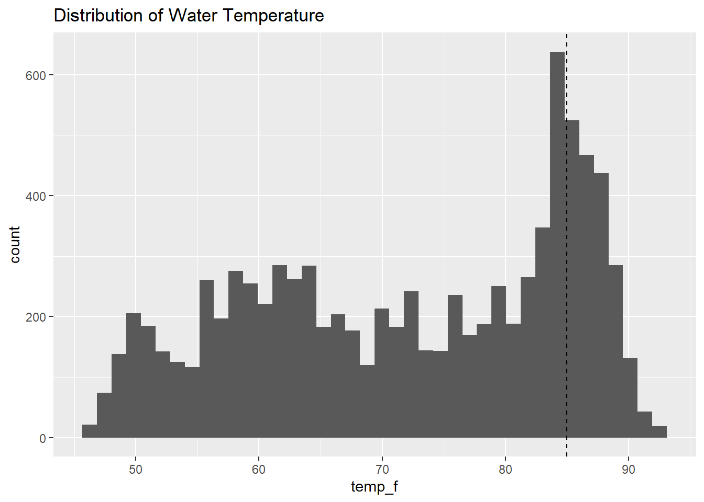
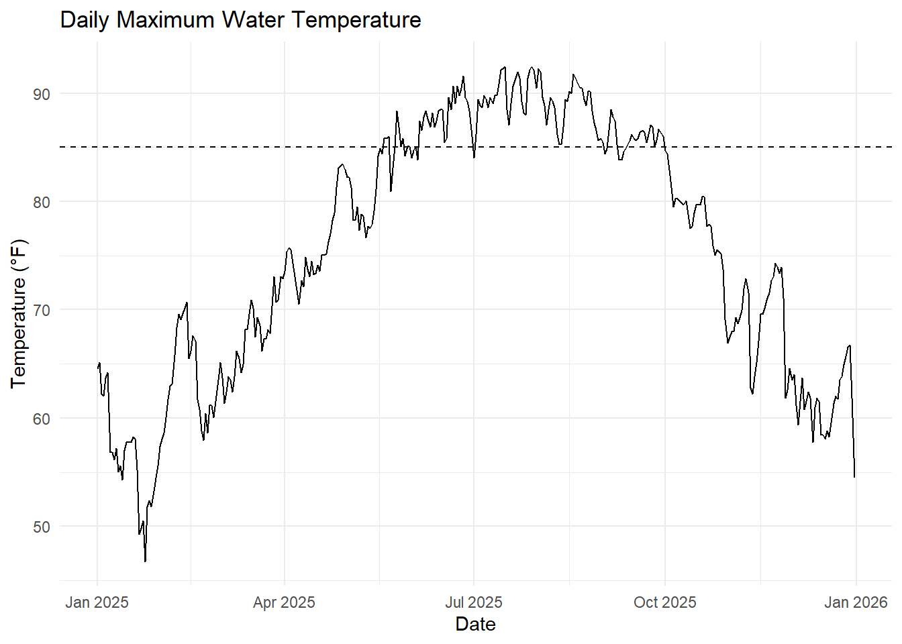
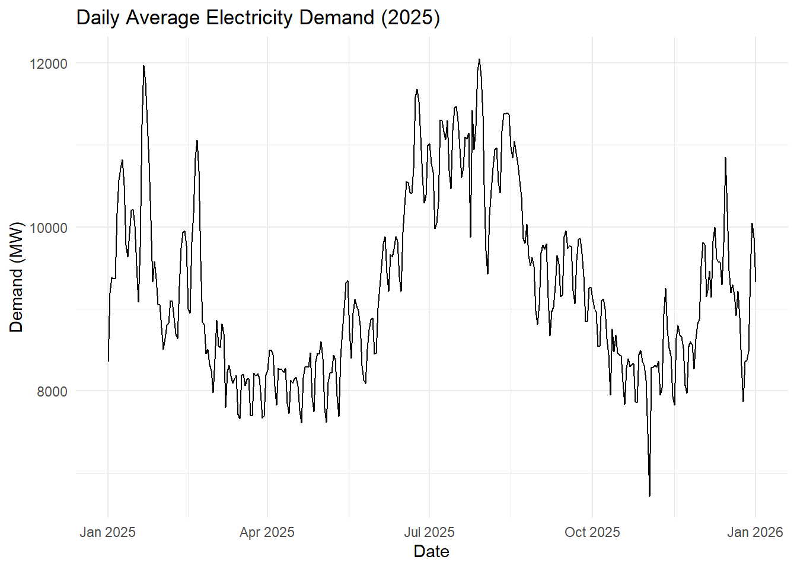
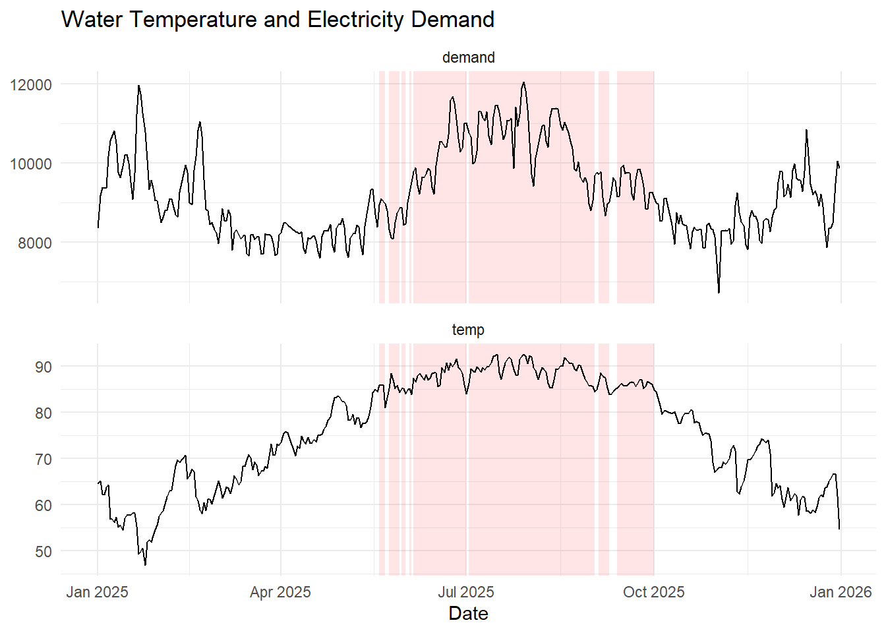

knitr::kable(head(temp_clean[, c("datetime", "temp_f")]))| datetime | temp_f |
|---|---|
| 2025-01-01 03:00:00 | 64.58 |
| 2025-01-01 03:30:00 | 64.40 |
| 2025-01-01 04:00:00 | 64.22 |
| 2025-01-01 04:30:00 | 64.04 |
| 2025-01-01 05:00:00 | 63.86 |
| 2025-01-01 05:30:00 | 63.68 |
Key constraint:
- Above 85°F, cooling efficiency decreases
Question:
What happens when this occurs during peak demand?
Assess risk that a that the power plant must reduce output during high electricity demand
Key threshold: 85°F water temperature
NOAA (water temperature)
EIA (electricity demand)
Frequent observations
Year: 2025
Focus: timing and overlap
knitr::kable(head(temp_clean[, c("datetime", "temp_f")]))| datetime | temp_f |
|---|---|
| 2025-01-01 03:00:00 | 64.58 |
| 2025-01-01 03:30:00 | 64.40 |
| 2025-01-01 04:00:00 | 64.22 |
| 2025-01-01 04:30:00 | 64.04 |
| 2025-01-01 05:00:00 | 63.86 |
| 2025-01-01 05:30:00 | 63.68 |
library(ggplot2)
ggplot(temp_clean, aes(temp_f)) +
geom_histogram(bins = 40) +
geom_vline(xintercept = 85, linetype = "dashed") +
labs(title = "Distribution of Water Temperature")

library(tidyverse)
demand1 <- read_csv("energy.csv")Warning: One or more parsing issues, call `problems()` on your data frame for details,
e.g.:
dat <- vroom(...)
problems(dat)Rows: 264934 Columns: 65
── Column specification ────────────────────────────────────────────────────────
Delimiter: ","
chr (5): Balancing Authority, Data Date, Local Time at End of Hour, UTC Tim...
dbl (42): Hour Number, Demand Forecast (MW), Demand (MW), Net Generation (MW...
lgl (18): Net Generation (MW) (Imputed), Total Interchange (MW) (Imputed), N...
ℹ Use `spec()` to retrieve the full column specification for this data.
ℹ Specify the column types or set `show_col_types = FALSE` to quiet this message.demand2 <- read_csv("EIA930_BALANCE_2025_Jul_Dec.csv")Warning: One or more parsing issues, call `problems()` on your data frame for details,
e.g.:
dat <- vroom(...)
problems(dat)Rows: 267218 Columns: 65
── Column specification ────────────────────────────────────────────────────────
Delimiter: ","
chr (5): Balancing Authority, Data Date, Local Time at End of Hour, UTC Tim...
dbl (49): Hour Number, Demand Forecast (MW), Demand (MW), Net Generation (MW...
lgl (11): Total Interchange (MW) (Imputed), Net Generation (MW) from All Pet...
ℹ Use `spec()` to retrieve the full column specification for this data.
ℹ Specify the column types or set `show_col_types = FALSE` to quiet this message.demand <- bind_rows(demand1, demand2)
demand_clean <- demand %>%
mutate(
datetime = as.POSIXct(`Local Time at End of Hour`, format="%m/%d/%Y %H:%M"),
demand_mw = as.numeric(`Demand (MW)`)
) %>%
filter(!is.na(datetime), !is.na(demand_mw), demand_mw > 0)
demand_daily <- demand_clean %>%
mutate(date = as.Date(datetime)) %>%
group_by(date) %>%
summarize(demand = mean(demand_mw, na.rm = TRUE))
ggplot(demand_daily, aes(date, demand)) +
geom_line() +
labs(
title = "Daily Average Electricity Demand (2025)",
x = "Date",
y = "Demand (MW)"
) +
theme_minimal()

Questions?